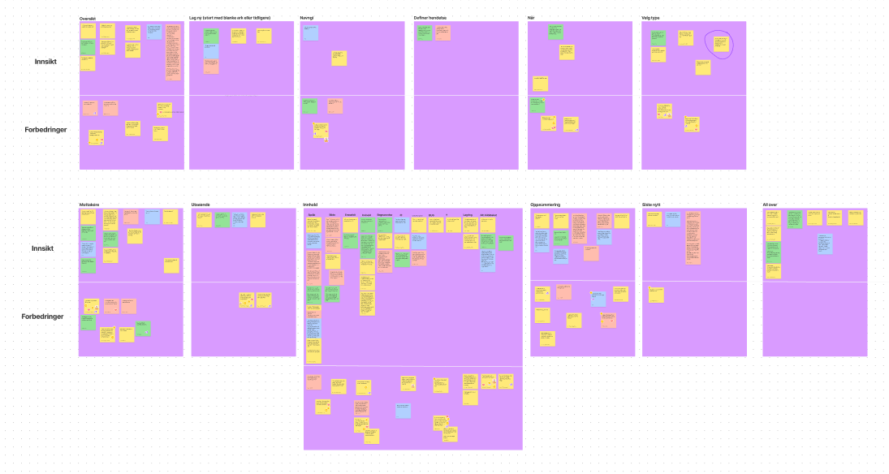
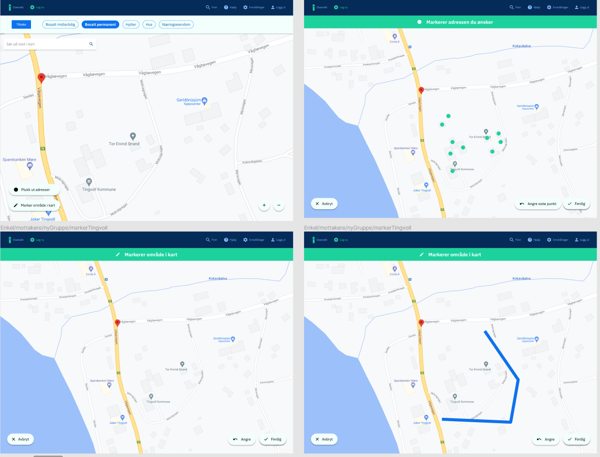
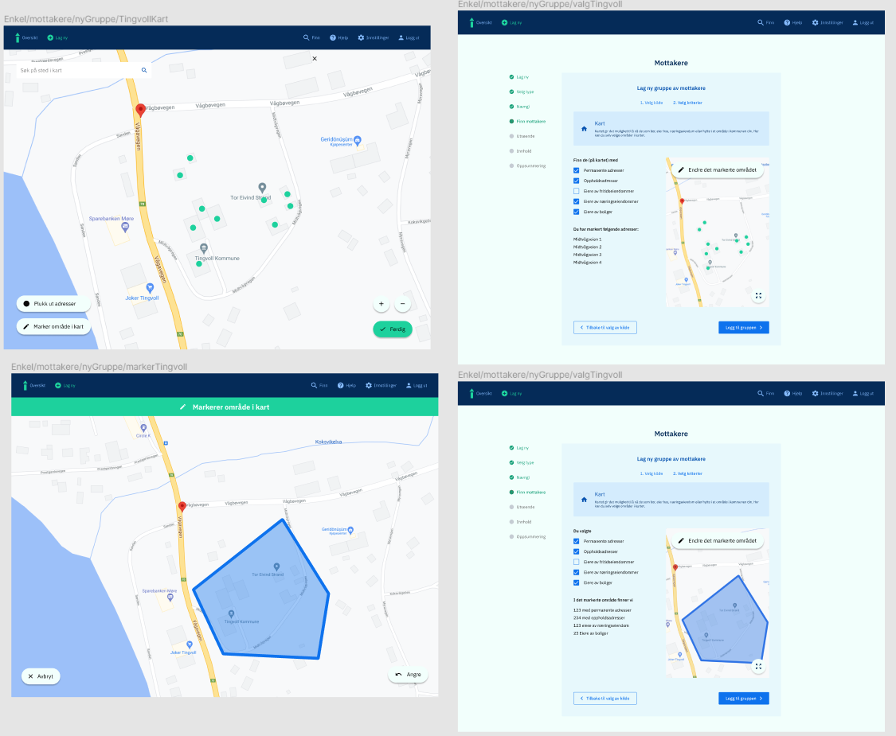
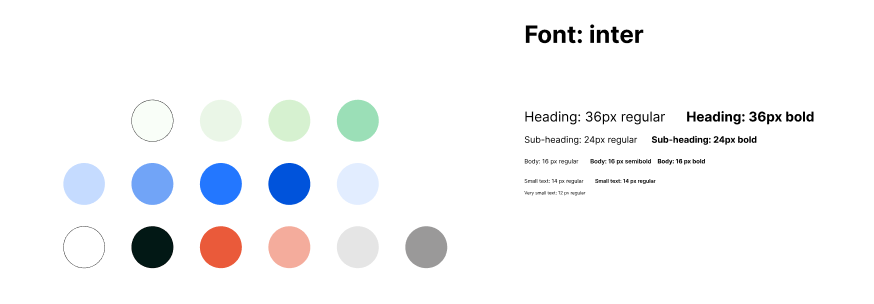

Sommeren 2021 jobbet jeg som konsulent for Knowit hvor 50% av tiden gikk til Kommuneforlaget. Her jobbet jeg mest med deres løsning, Innbyggerkontakt. Jeg jobbet også litt med Delegeringsreglementet som var et nyoppstartet prosjekt hvor designet kun var i idefasen.
Interaksjonsdesign: Scrum, teamarbeid, Figma, brukertesting, intervjuer, evaluering -> iterasjon
Utvikling: -
Gjennom sommeren jobbet vi i agile team med bruk av Scrum og gjennomførte retrospektive møter, sprintplanlegginger og daglige stand ups.
Innbyggerkontakt er en løsning som eksisterer og brukes av kommuner i dag. Jeg jobbet med å forbedre løsningen hvor jeg gjennomførte mange brukertester og gikk gjennom funnene for å møte brukernes behov. Deretter gjorde vi endringer i løsningen. Over er et utklipp av innsiktstavlen fra brukertestene. Vi valgte å sette opp masse post-it lapper og deretter sortere dem og se hva som gikk igjen i testene.
 Gjennom hele prosjektet jobbet vi i iterasjoner hvor målet alltid var å tilfredsstille brukerens behov, derfor er alle designvalg også gjort på bakgrunn av det brukerne selv mente. Bildene over er noe av det jeg designet i Figma i sommer.
Kommuneforlagets delegeringsreglement er en digitalisert løsning i dag, men vi fikk i oppgave å "starte på nytt" da hele løsningen skal endre. Jeg jobbet sporadisk med dette ca halve sommeren da det kun var en idemyldringsprosess. Det var ikke gjort noen innledende datainnsamling som gjorde prosessen noe utfordrende. Det var imidlertid lærerikt å kunne jobbe med en allerede eksisterende løsning, men likevel begynne på nytt.
Vi søkte etter inspirasjon på nettet for å kunne sette sammen et utgangspunkt på farger.
Vi endte opp med følgende farger og Inter som font.